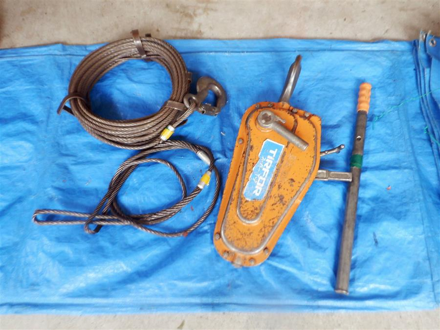
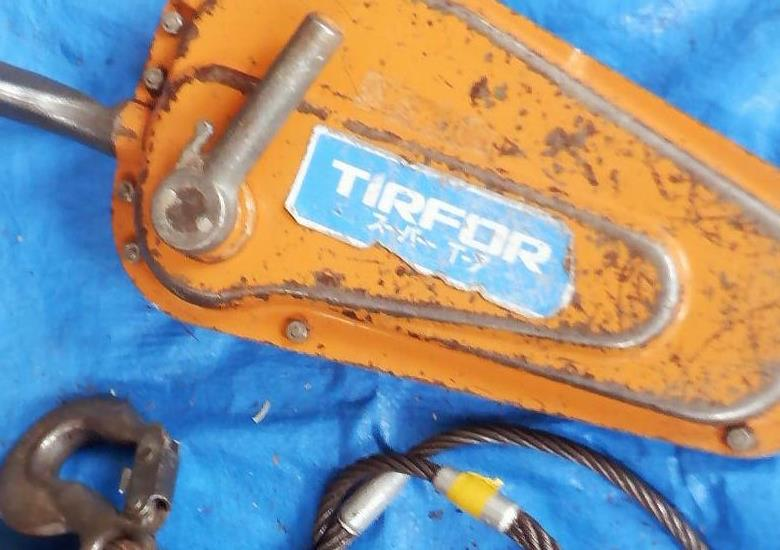
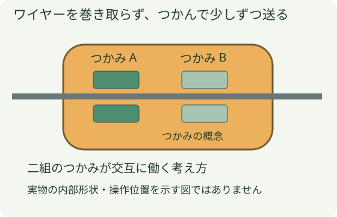
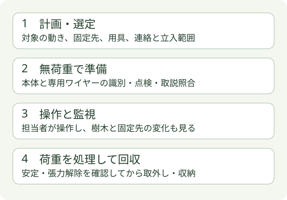
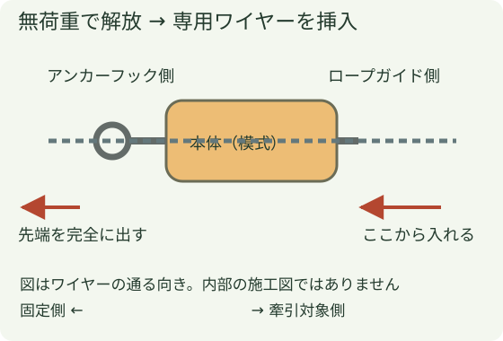
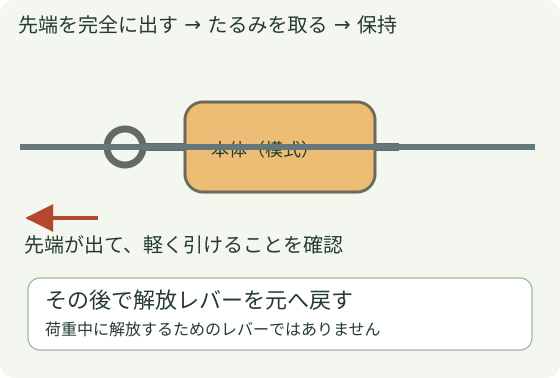
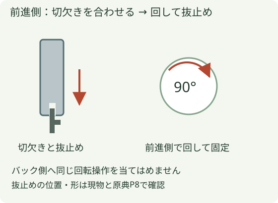
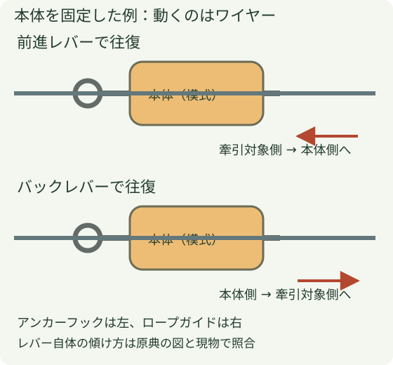

チルホールの使い方・共通基礎
レバーの往復で専用ワイヤーを少しずつ送り、物を引く手動ウインチです。樹木をどこへ動かすかを決める計画と、機械の操作を分けて学びます。


1 何で引いているのか

ドラムへ巻き取るウインチと違い、ワイヤーが本体の中を通過します。専用ワイヤーの状態と、本体が正しく保持できることが重要です。細さや見た目が近い別のワイヤーへ置き換えません。
2 使い始めから終わりまで

- 計画を共有する：引く樹木、動く範囲、固定先、用具の経路、連絡方法を担当者間で合わせます。
- 準備する：本体の表示と適合ワイヤーを照合し、外装・ハンドル・フック・端末・全長の傷みを確認します。
- 操作を見る：樹木だけでなく、固定先の動き、ワイヤーの擦れ、引っ掛かり、本体の異音・変形にも目を向けます。異常時は操作を止めて伝えます。
- 回収する：樹木が安定し、残った張力を担当者が確認してから取外しへ進みます。荷重のあるワイヤーを解放して緩める方法にはしません。
3 現場で決めること
太い立木だから固定できる、樹木の重さが定格未満だから引ける、と外観だけでは決められません。傾斜・摩擦・引っ掛かり・動き始めの変化、固定先と接続用具へ掛かる力が関係します。
固定先と掛け位置、必要な能力と経路、操作する位置、立入範囲は現場計画で決めます。滑車を追加した倍率や張力を、この図から決めません。電線に接触・接近する可能性がある場合は、電気設備側の条件を含めて作業可否を確認します。
ここからはメーカー作成T-7取説（2014年3月版）の確認用補足です。会社機は写真表示からT-7が有力ですが、銘板は未確認。現物・適合ワイヤー・現行取説と照合してから実技へ進みます。
4 T-7確認用：操作順を追う
専用用具の識別・点検を済ませ、手袋を着用して学ぶ工程です。図は位置関係を独自に整理したもので、内部形状を再現していません。

- 台付け：フックのセフティキャッチを開き、正しく掛けてキャッチをロック。原典P5：操作1
- 解放：無荷重で解放レバーをフック側へ引き、歯止めに掛けます。原典P6：操作2
- 挿入：専用ワイヤーをガイドから真っすぐ入れ、先端をフック側へ完全に出します。重ければ無理に押さず、差し戻して通りを確認。原典P7：挿入条件

- たるみを取る：フック側へ真っすぐ引出し、出た部分もキンクさせず管理。原典P7：操作4
- 保持へ戻す：解放レバーを歯止めから外し、ゆっくり元へ戻します。原典P8：操作5
- ハンドル取付け：専用ハンドルを選んだレバーへ。前進側は切欠きを合わせて差し込み、90°回して抜止めをセット。原典P8：操作6

- 往復操作：前進かバックの一方を操作。同時には動かしません。原典P9：操作7

5 T-7確認用：中断・片付け
使用中の解放は禁止。先端は本体を完全に通したまま使い、中断時はハンドルを外します。荷の下・周辺や、外れたワイヤーの危険範囲へ入りません。原典P9：操作条件、原典P10：禁止事項
回収は、樹木の安定と残った張力がないことを担当者が確かめてから。解放を荷重解除の代わりにしません。汚れ・水分を除き、指定の手入れを行い、解放レバーを元に戻して保管します。原典P12：注油、原典P13：保管
異常・過熱で動かない、安全ピンが切れた場合は操作を中止し、原因を確認します。延長棒・代用ピン・無断分解で再開しません。点検の数値は採用品確認後に扱い、他のロープやワイヤーへ流用しません。
6 現物で残る確認
銘板のメーカー名・型式・製造番号・能力表示、適合する専用ワイヤー、レバーと抜止めの形、現物に対応する取説の版を確認します。メーカーの現行公開元はメンテナンス中のため、今回参照した2014年版が最新であるとは確認できていません。
樹木への掛け位置・張力・固定先、電線近傍の作業可否は、この機械操作の説明から決めません。現場計画と責任者の判断、必要な教育・実地訓練につなげます。
出典・版・図の扱い
- カツヤマキカイ作成：チルホールT-7取扱説明書（2014.3、16ページ）。大鐵の取扱製品ページからリンクされた公開資料。印刷P5–10の操作と安全条件、P11–14の手入れ・保管・点検を照合。
- メーカーの現行配布先は今回メンテナンス表示。旧チルコーポレーション版とは混在させていません。
2026年10月25日参照。メーカー図・写真は転載せず、会社写真と独自の模式図を使用。取説の全内容を置き換える資料ではありません。